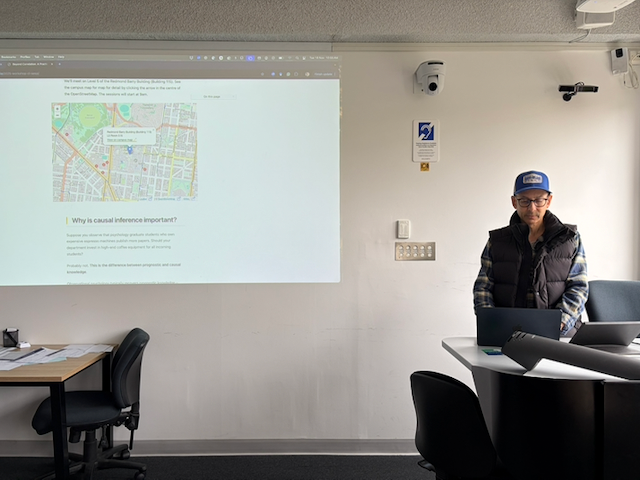
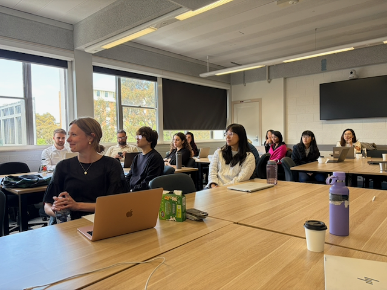
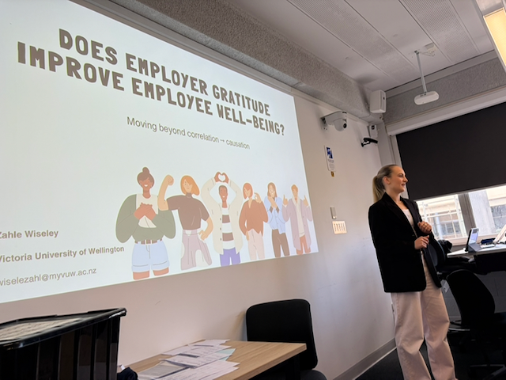
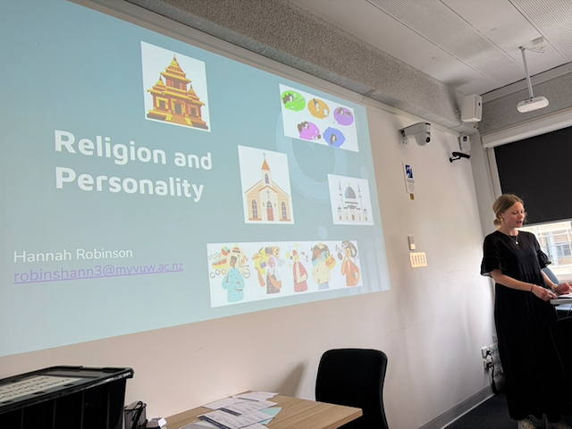
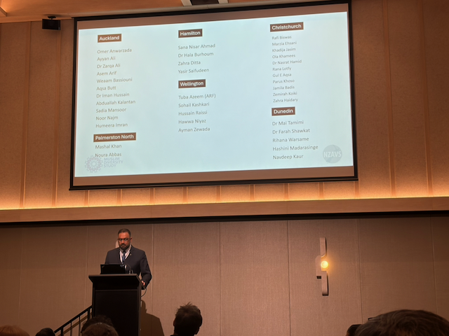
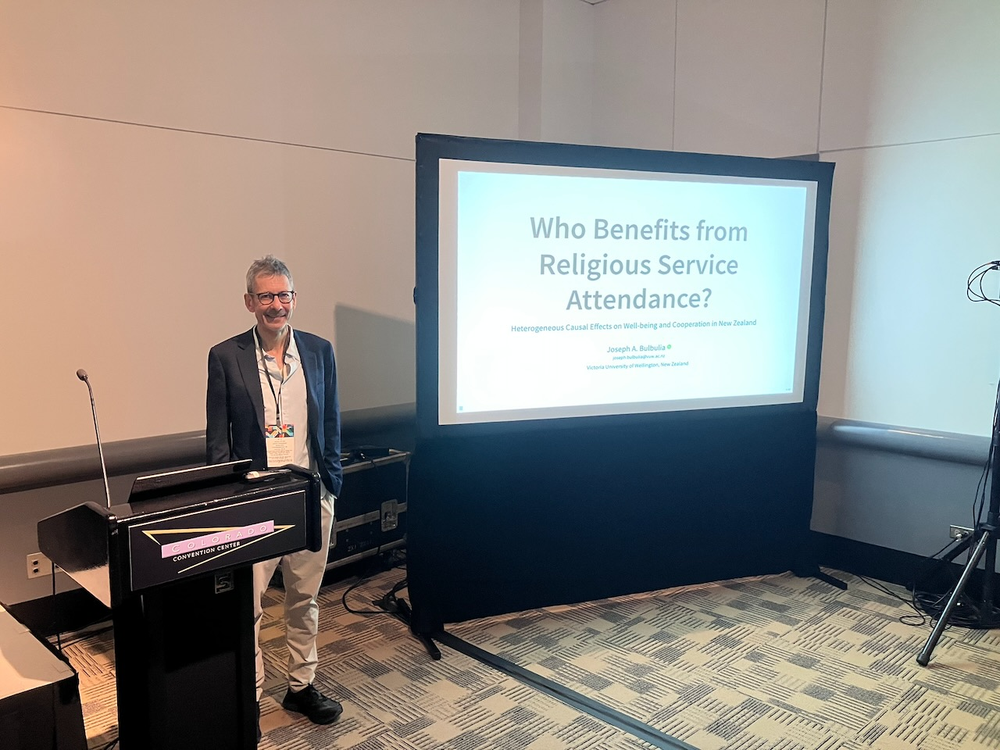

News
2026
NZAVS-LMTP Workflow, Version 1, Published on Zenodo
17 August 2026 | Zenodo
Version 1 of our longitudinal causal workflow for the New Zealand Attitudes and Values Study is now on Zenodo. Studies following the workflow register their target trial, acceptable fallback questions, identification assumptions, and analysis code before outcomes enter estimation. DOI · Lab Report
Estimation uses the sequentially doubly robust estimator in lmtp, called through margot. Supported by Templeton Religion Trust award 2021-0418.
boilerplate 1.4.0 Published on CRAN
12 July 2026 | Comprehensive R Archive Network
Version 1.4.0 of boilerplate is on CRAN. JSON is now the default database format and RDS writing has been removed from package APIs. Existing trusted RDS databases remain readable and can be converted with boilerplate_migrate_to_json().
New Master’s and Honours Students
July 2026 | Victoria University of Wellington
Putri Pristine (Master’s) and Christina Cartwright (Honours) have joined the lab.
Putri is from Indonesia and is estimating the long-term causal effects of belief in God and belief in a spirit or life force on multidimensional well-being, asking whether holding both yields anything extra.
Christina is from Austria and previously worked in government. She is using causal forests and policy trees to estimate how the effects of volunteering on well-being vary across groups.
New Cambridge Handbook Chapter Published
June 2026 | Cambridge University Press
Victor Counted, Maureen Miner, and Joseph Bulbulia published Australia and New Zealand: The psychology of religion up to 2020 in The Cambridge Handbook of the International Psychology of Religion. DOI
Two Articles at Religion, Brain & Behavior
June 2026 | Religion, Brain & Behavior
Two lab articles entered production at Religion, Brain & Behavior:
- Beyond deficit narratives: Religious practice, meaning, and resilience in a national sample of New Zealand Muslims, by M. Usman Afzali, Aarif A. Rasheed, Geoffrey Troughton, Kumar Yogeeswaran, Chris G. Sibley, and Joseph A. Bulbulia (published online 18 November 2026). DOI
- Religion, cooperation, and prosocial behavior: Methods and evidence for causality, by Michael McCullough, Don Davis, and Joseph Bulbulia. DOI
Dr Inkuk Kim Moves to Georgia State University
March 2026 | Georgia State University
Dr Inkuk Kim has taken up a postdoctoral fellowship with Don E. Davis at the HAPPI Lab at Georgia State University. He remains a Fellow of OTTO Lab, continuing work on environmental psychology, trust in science, and character formation across adulthood. We have not yet tested whether moving to Atlanta causes higher well-being.
religionmap.org Is Live
20 February 2026 | Victoria University of Wellington
religionmap.org is live: open research infrastructure for mapping places of worship and supporting cross-cultural policy research. Code and workflows are at github.com/go-bayes/places-of-worship.
Two New PhD Students
January 2026 | Victoria University of Wellington
Mekonnen Tsehay and Mohammad Islam have started their PhDs in the lab.
Mekonnen is from Ethiopia and is estimating the causal effects of religious ritual behaviours on health and well-being among religiously identified New Zealanders.
Mohammad is from Bangladesh and is estimating the causal effects of Right-Wing Authoritarianism and Social Dominance Orientation on prejudice.
2025
SASP 2025 Pre-Conference Workshop in Melbourne
19 November 2025 | University of Melbourne | 23 participants
The lab travelled to Melbourne for SASP 2025, where Joseph Bulbulia ran a full-day pre-conference workshop (Beyond Correlation: A Practical Introduction to Causal Inference in Observational Social Psychology) on why cross-sectional regressions rarely answer the questions psychologists actually want to ask.
Two lab students presented their causal analyses:
Zahle Stewart: Does Employer Gratitude Improve Employee Well-being? (NZAVS). Slides (PDF)
Hannah Robinson: Religion and Personality (NZAVS). Slides (PDF)
Collaborator Dr Usman Afzali (University of Otago, Muslim Flourishing Study) also presented on Muslim community-making and resilience in New Zealand.





Resources:
- Workshop website: go-bayes.github.io/2025-workshop-ci-sasp
- Workshop materials: github.com/go-bayes/2025-workshop-ci-sasp
- Teaching software: causalworkshop package
SPARCC Causal Inference Workshop at UC San Diego
10–13 August 2025 | University of California, San Diego
Joseph Bulbulia taught a workshop on average and heterogeneous causal effects in observational panel data at UC San Diego. Workshop materials
William Bier Interdisciplinary Award Lecture
8 August 2025 | Denver, Colorado
Joseph Bulbulia delivered the William Bier Interdisciplinary Award lecture (APA Division 36): Who Benefits from Religious Attendance? Heterogeneous Causal Effects on Well-being and Cooperation in New Zealand – asking what holds up once we stop mistaking cross-sectional associations for causal effects.
